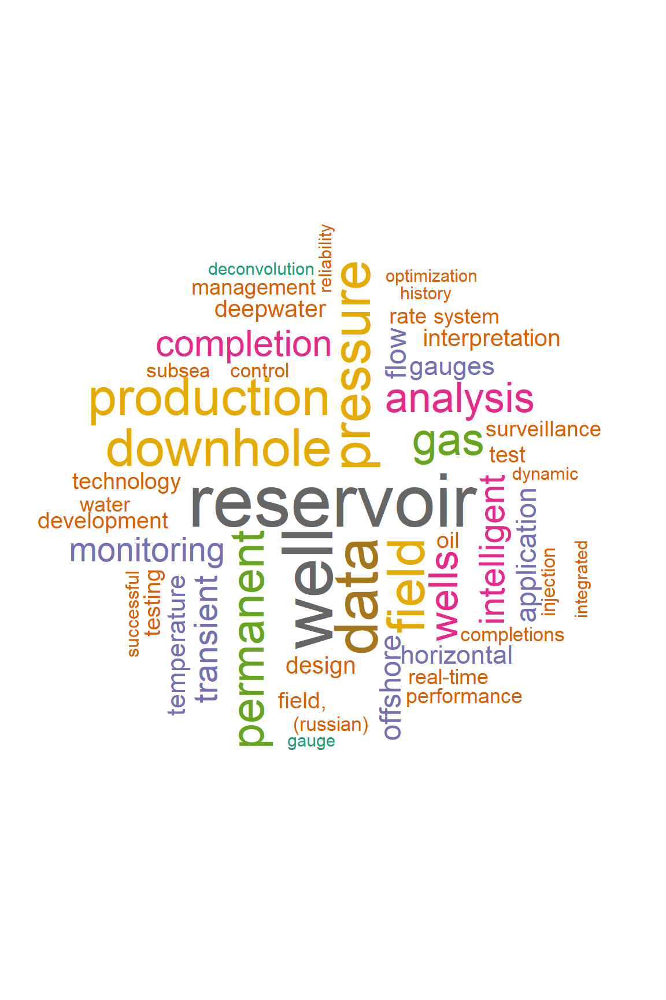
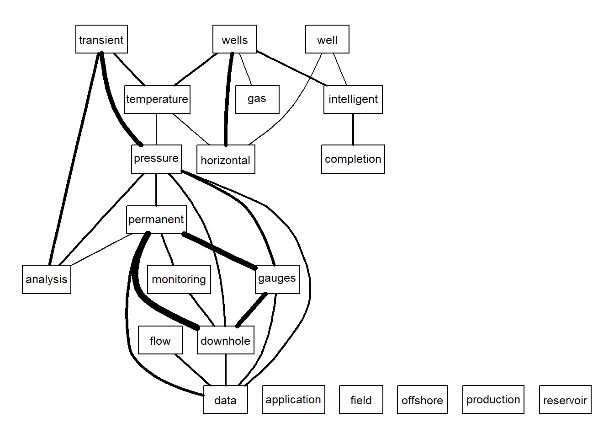
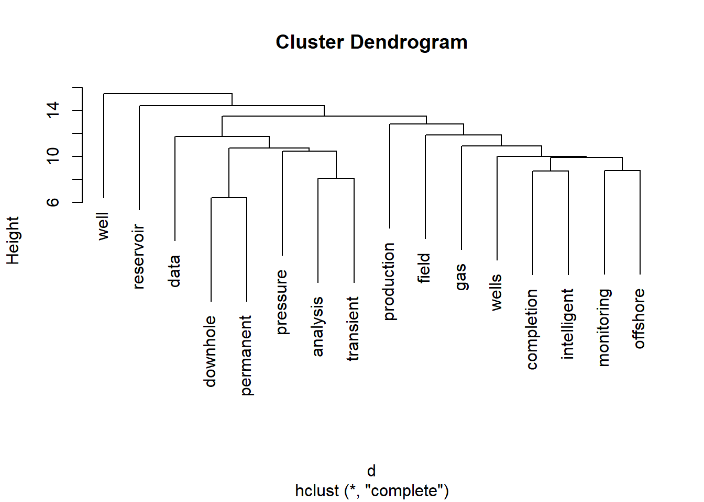

library(petro.One)
library(tm)## Loading required package: NLPmy_url <- make_search_url(query = "Permanent Downhole Gauge",
how = "all")
get_papers_count(my_url) # how many papers total## [1] 544papers_by_type(my_url) # papers by type## # A tibble: 3 x 2
## name value
## <chr> <dbl>
## 1 Conference paper 464
## 2 Journal paper 76
## 3 Presentation 4# create a dataframe of papers found
df <- read_multidoc(my_url)
df## # A tibble: 544 x 6
## title_data
## <chr>
## 1 Permanent Downhole Gauge: A Need or A Luxury?
## 2 Reservoir Management Optimization Using Permanent Downhole Gauge Data
## 3 Encouraging Experience in the Use of Permanent Downhole Gauges
## 4 Pressure Transient Analysis Of Data From Permanent Downhole Gauges
## 5 Wavelet Filtering of Permanent Downhole Gauge Data
## 6 Comparative Analysis of Permanent Downhole Gauges and their Applications
## 7 Interpreting Pressure and Flow Rate Data from Permanent Downhole Gauges Usi
## 8 Analyzing Transient Pressure From Permanent Downhole Gauges (PDG) Using Wav
## 9 Analyzing Simultaneous Rate and Pressure Data From Permanent Downhole Gauge
## 10 Recovery Increase by Permanent Downhole Gages Data - Western Siberia Field
## # ... with 534 more rows, and 5 more variables: paper_id <chr>,
## # source <chr>, type <chr>, year <int>, author1_data <chr>library(petro.One)
term_freq <- term_frequency(df)
term_freq## # A tibble: 1,507 x 2
## word freq
## <chr> <int>
## 1 reservoir 124
## 2 well 118
## 3 data 99
## 4 pressure 85
## 5 downhole 83
## 6 field 82
## 7 production 82
## 8 permanent 70
## 9 gas 69
## 10 analysis 62
## # ... with 1,497 more rowslibrary(petro.One)
plot_wordcloud(df, max.words = 100, min.freq = 15)
plot_relationships(df, min.freq = 25, threshold = 0.1)
library(cluster)
tdm <- get_term_document_matrix(df)$tdm
tdm.rst <- removeSparseTerms(tdm, 0.93)
d <- dist(tdm.rst, method="euclidian")
fit <- hclust(d=d, method="complete") # for a different look try substituting: method="ward.D"
fit ##
## Call:
## hclust(d = d, method = "complete")
##
## Cluster method : complete
## Distance : euclidean
## Number of objects: 16plot(fit, hang = 1)